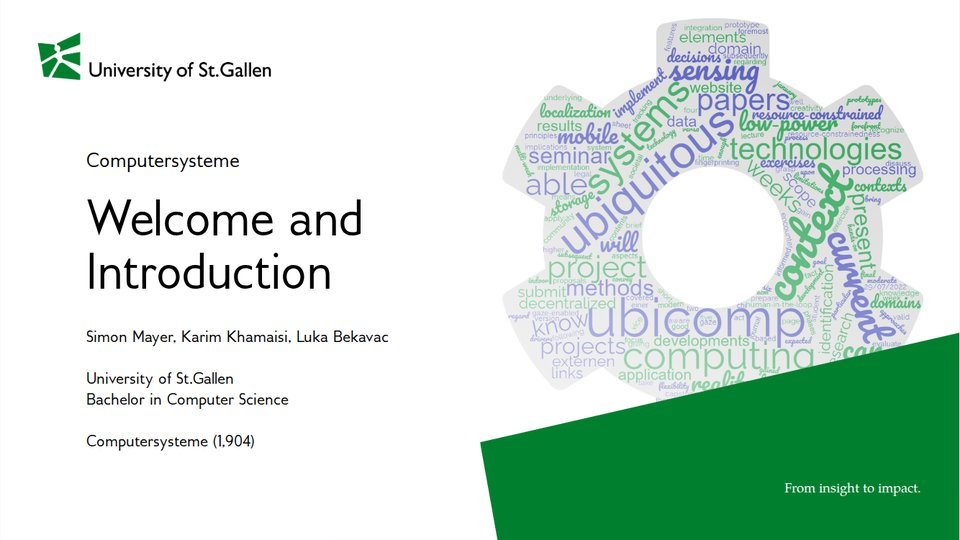

Computersysteme (1,904)
How an algorithm in a high-level language becomes instructions that a processor executes: from bits to circuits, to a processor, to assembly language.
Open course →4 lectures
Institute of Computer Science
Lecture slides of the Chair for Interaction- and Communication-based Systems, as online presentations that also work on a phone and print to PDF.
From insight to impact.

How an algorithm in a high-level language becomes instructions that a processor executes: from bits to circuits, to a processor, to assembly language.
Open course →4 lectures